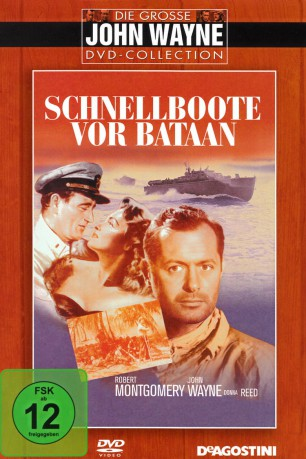
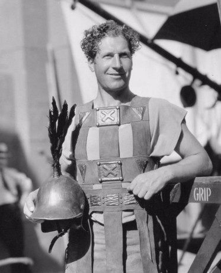

#8812 Schnellboote vor Bataan
Alternativ: They Were Expendable
Auszeichnungen: für 2 Oscars nominiert
 
 IMDB-Wertung: 7.3 / 10
IMDB-Wertung: 7.3 / 10  Metascore: 0
Metascore: 0 
Als die Japaner den Marinestüzpunkt Pearl Harbor bombardieren, knnen die Männer auf den Patrouillenbooten der Navy zeigen, was in ihren kleinen Schiffen steckt. Die Philippinen sind durch die Blockade abgeschnitten, und die Patrouillenboote schmuggeln sich durch die von den Japanern kontrollierten Gewsser in die Subic-Bucht, um hochrangige Offiziere von den schwer bedrnägten Inseln zu evakuieren.
Jahr: 1945
Dauer: 134 Minuten
FSK: 12
Land: USA Studio: Metro Goldwyn MayerTonspuren:
Untertitel:
Auflösung: SD (720x512) Größe: 1576 MB
Genre: Drama, Krieg
Regisseur: John Ford, Robert Montgomery
Drehbuch: William L. White
Soundtrack: Herbert Stothart
Darsteller:
- Robert Montgomery als Lt. John Brickley
 John Wayne als Lt. (J.G.) 'Rusty' Ryan
John Wayne als Lt. (J.G.) 'Rusty' Ryan Donna Reed als Lt. Sandy Davyss
Donna Reed als Lt. Sandy Davyss- Jack Holt als General Martin
 Ward Bond als 'Boats' Mulcahey C.B.M.
Ward Bond als 'Boats' Mulcahey C.B.M.- Marshall Thompson als Ens. 'Snake' Gardner
- Paul Langton als Ens. 'Andy' Andrews
- Leon Ames als Major James Morton
 Donald Curtis als Lt. (J.G.) 'Shorty' Long / Radio Announcer
Donald Curtis als Lt. (J.G.) 'Shorty' Long / Radio Announcer Cameron Mitchell als Ens. George Cross
Cameron Mitchell als Ens. George Cross- Jeff York als Ens. Tony Aiken
 Murray Alper als 'Slug' Mahan T.M. 1c
Murray Alper als 'Slug' Mahan T.M. 1c Harry Tenbrook als 'Squarehead' Larsen SC 2c
Harry Tenbrook als 'Squarehead' Larsen SC 2c- Charles Trowbridge als Admiral Blackwell
- Robert Barrat als The General
- Bruce Kellogg als Elder Tompkins M.M. 2c
 Louis Jean Heydt als 'Ohio'
Louis Jean Heydt als 'Ohio' Russell Simpson als 'Dad' Knowland
Russell Simpson als 'Dad' Knowland- Vernon Steele als Army Doctor
- Philip Ahn als Army Orderly (uncredited)
- Steve Barclay als Naval Officer (uncredited)
- Betty Blythe als Officer's Wife (uncredited)
 Al Bridge als Lieutenant Colonel (uncredited)
Al Bridge als Lieutenant Colonel (uncredited) George Bruggeman als Man in Admiral's Office (uncredited)
George Bruggeman als Man in Admiral's Office (uncredited)- Jack Cheatham als Commander (uncredited)
- Henry H. Daniels Jr. als Sailor (uncredited)
- William B. Davidson als Hotel Manager (uncredited)
- Blake Edwards als Boat Crewman (uncredited)
- Jim Farley als (uncredited)
- Almeda Fowler als Officer's Wife (uncredited)
 James Gonzalez als Sailor (uncredited)
James Gonzalez als Sailor (uncredited) Stuart Hall als Bar Patron (uncredited)
Stuart Hall als Bar Patron (uncredited)- Robert Homans als Bartender at Manila Hotel (uncredited)
 Paul Kruger als Man in Admiral's Office (uncredited)
Paul Kruger als Man in Admiral's Office (uncredited)- Leota Lorraine als Officer's Wife (uncredited)
- Jack Luden als Naval Air Captain (uncredited)
 George Magrill als Man in Admiral's Office (uncredited)
George Magrill als Man in Admiral's Office (uncredited) Kermit Maynard als Airport Officer (uncredited)
Kermit Maynard als Airport Officer (uncredited) Frank McGrath als 'Slim' - Bearded CPO (uncredited)
Frank McGrath als 'Slim' - Bearded CPO (uncredited) Robert Milasch als Minor Role (uncredited)
Robert Milasch als Minor Role (uncredited) Jack Mower als Officer (uncredited)
Jack Mower als Officer (uncredited) Forbes Murray als Navy Captain (uncredited)
Forbes Murray als Navy Captain (uncredited)- Wedgwood Nowell als Man in Admiral's Office (uncredited)
- Robert Emmett O'Connor als Silver Dollar Bartender (uncredited)
-  John Roy als Man in Admiral's Office (uncredited)
 Larry Steers als Man in Admiral's Office (uncredited)
Larry Steers als Man in Admiral's Office (uncredited)- Sammy Stein als Sammy - Boat Crewman (uncredited)
 Jack Stoney als Boat Crew Member (uncredited)
Jack Stoney als Boat Crew Member (uncredited)- Jack Trent als Officer at Airport (uncredited)
 Tom Tyler als Captain at Airport (uncredited)
Tom Tyler als Captain at Airport (uncredited)
Datei: X:\1900-1949\Schnellboote vor Bataan (1945, FSK12, 720x512).mp4 seit 30.04.2018
Festplatte: HD 1900-1970
 Es gibt insgesamt 80 Filme in der Gruppe '1900-1949'
Es gibt insgesamt 80 Filme in der Gruppe '1900-1949'